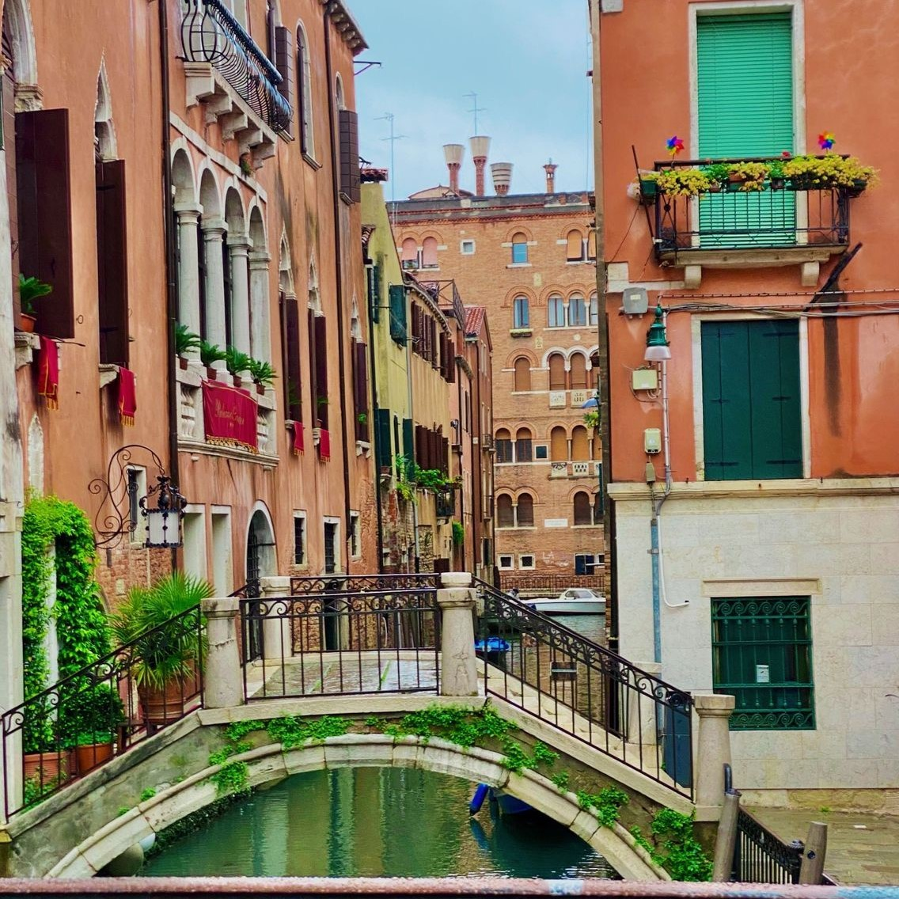

Personal Information
Rayan Samman
ICT student at HZ University
21 years old
About me
Originally from Aleppo, Syria, one of the world's oldest cities. I moved to Istanbul when I was 9 and learned Turkish quickly. After around 8 years in Istanbul, I moved to the Netherlands for better education and lifestyle. This journey challenged me and made me more open-minded and adaptable. I speak four languages fluently and aim to learn more.
Adore traveling, my biggest dream is to make a world tour with a caravan not only for the places but connecting with people I meet along the way, different backgrounds, diving into their cultures and languages. Hearing their life stories, understanding their unique perspectives, and sharing in their experiences is a source of immense joy for me.

One of my biggest passions is photography and filmmaking, a love I've cherished since childhood. I enjoy capturing life through my lens and find relaxation in editing videos. Gallery